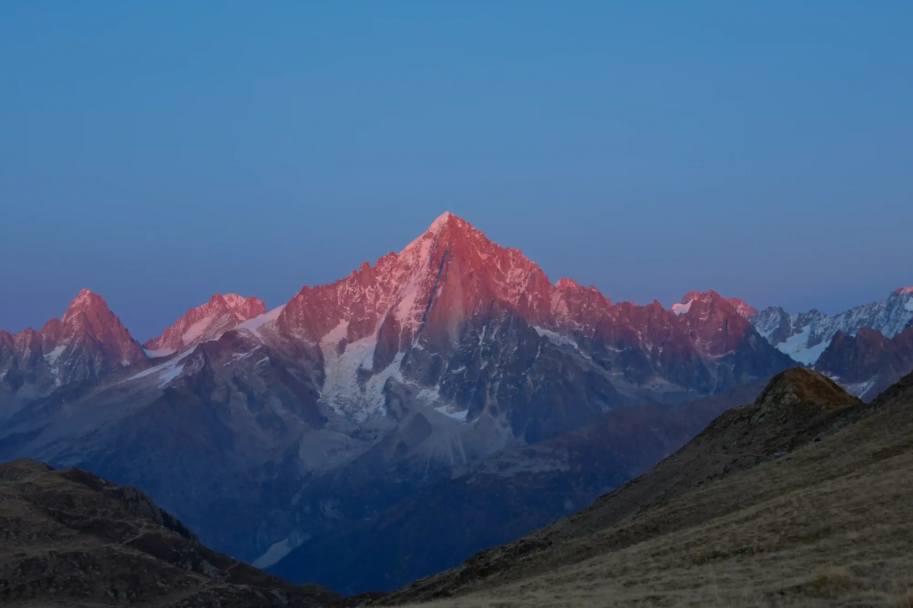

Beyond the screen
Powered by the outdoors.
The mountains are where I reset, push my limits and find a different kind of focus.
Mountain life
Movement, freedom and fresh perspective.
Whether I am behind a camera, on a bike or skiing a fresh line, the Alps keep me curious and grounded.
Photo & video
Frames from the mountains and the ocean.
Also into
Energy in, ideas out.
-
Photo & video
Self-taught mountain photography and filming. For two years, I have been making ski-season films for my friends: shooting, editing, choosing the soundtrack and color grading.
-
Downhill mountain biking & freeride skiing
In Portes du Soleil: speed, line choice and total focus.
-
Hyrox & strength training
I enjoy pushing my limits and training regularly.
-
Reading & self-learning
Books on entrepreneurship and personal finance (e.g. Rich Dad Poor Dad by R. Kiyosaki), and self-training in AI tools since 2025.